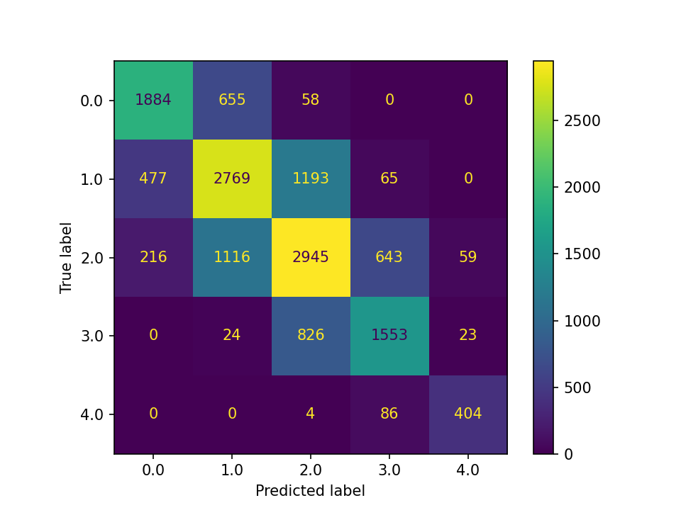
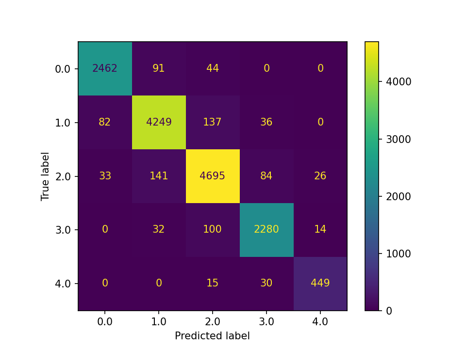
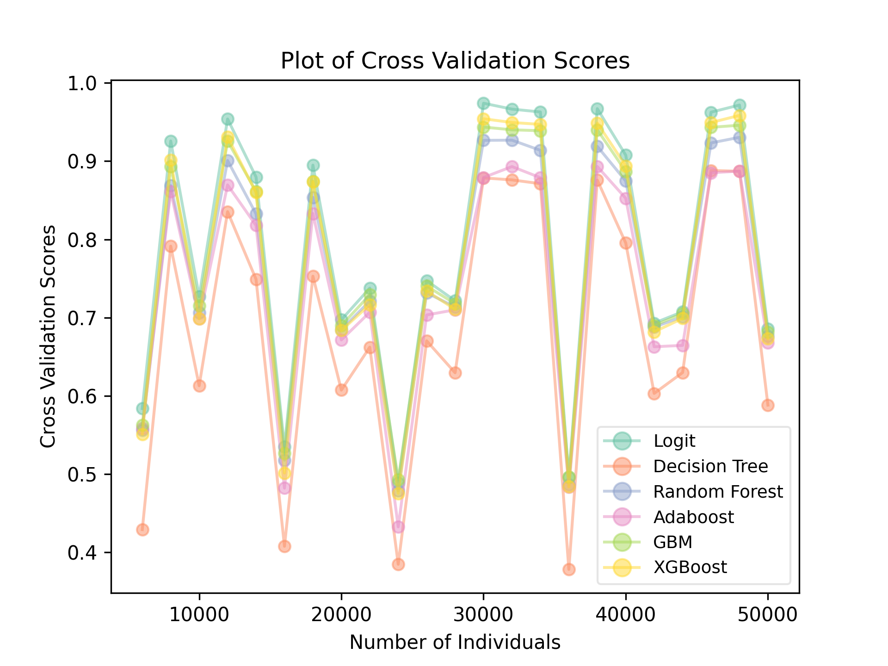
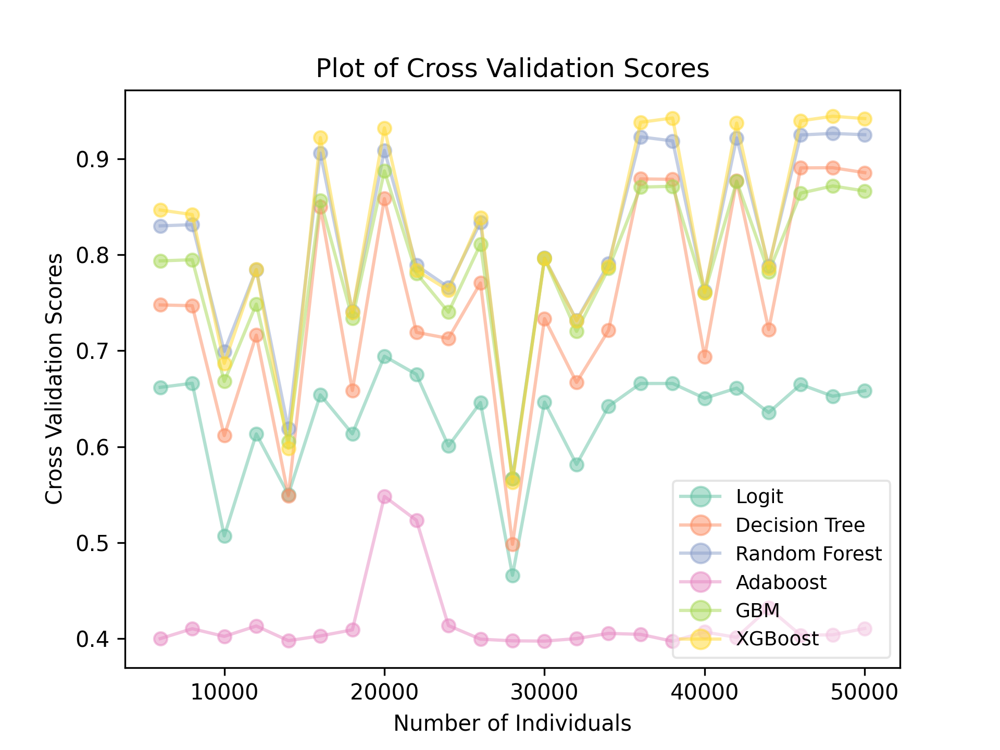

Chapter 2 Discrete Choice, Classification, and Tree-Based Ensemble Algorithms
2.1 Introduction
Suppose you are the owner of an e-commerce website that sells a musical instrument in 5 sizes: soprano, alto, tenor, bass, and contrabass. You are considering to open up some physical stores. With physical stores, you need to make more careful inventory decisions. Based on your past experience in shipping out your instruments, you are convinced that different communities can have different tastes toward different sizes. And you want to make inventory decisions accordingly.
If the stake for a musical store is too small, consider the classic discrete choice example: automobiles. Sales of different types of automobiles are different among U.S. states, for example, more trucks are sold in Texas than most other states. In such circumstance, answering the question of “what” is more important than “how many”, as most consumers buy a single unit of the item. This scenario is known as “discrete choice” in economics and social sciences. Being able to make a good prediction on such question can inform many business decisions, not only inventory, since the aggregation of individual purchases tells us about the overall demand of a product in a market.
In economics and social sciences, the popular approaches to model discrete choice are “top-down”: it starts with an understanding of the data-generating process and some assumptions. Logit and Probit are two widely used models in economics. If the error term is believed to follow a logistic distribution, then use the logit model or logistic regression. If the error term is believed to follow a normal distribution, then use the probit model. If there is nested structure, then use nested-logit. And so on.
This is fine, since the focus of economics and social sciences is hypothesis testing and to understand mechanisms. On the contrary, the machine learning approach is more bottom-up: it mostly cares about making good predictions. In other words, we can say that the economics “top-down” approach of discrete choice modeling cares much more about “bias” whereas the machine learning approach considers the bias-variance tradeoff more holistically.
2.2 The Bias-Variance Tradeoff
Let’s begin with Variance. A model with a high variance is sensitive to the training data and can capture the fine details in the training data. However, such model is usually difficult to generalize. On the one hand, the test data, or the data that the model is actually applied to, may lack the fine detail presented in the training data. On the other hand, those fine details may not be as important in the actual data as compared to the training data.
A model that can capture fine details is almost guaranteed to have low bias. A model with low bias is one that explains the known, or training, data well. In order to predict, we need our machine learning model to learn from known data. A model with high bias can rarely predict well.
While models with low bias and low variance do exist, they are rare. Since a model with high bias rarely works well, lowering bias is often considered the first-order task. One way to do so is using models, or specifying hyperparameters of a model, such that more fine details in the data are captured. By so doing, higher variance is introduced. And hence the trade-off.
Consider the following example: a zoo wants to build a machine learning algorithm to detect penguin species and deploy it on their smart phone application. Let’s say all that the zoo and the users care about is to tell apart King, Magellanic, and Macaroni penguins. The zoo’s staffs and data scientists took hundreds of photos of penguins in their aquarium, split the penguins into training and test datasets as how tasks like this are usually performed, and built the machine learning model. In their test, with photos that they have set aside earlier, they find that the algorithm is able to identify the penguins correctly 98% of the time. They were happy with the result and so deployed it.
However, when users use the application to identify penguins in other zoos, the algorithm fails miserably. Why? It turns out that the machine learning algorithm was not learning to identify penguins by their different features such as head, neck, and tail. Instead, the algorithm identifies the different species of penguins by the tag on their wings: blue is King penguin, red Magellanic, and yellow Macaroni. These are the colors used by the zoo that developed the algorithm, but other zoos have different tags. As a result, this algorithm, which has low bias but high variance due to its dependency on penguins in a single aquarium, is unable to predict or detect the species of penguins outside of the training data.
As we will see next, tree-based algorithms are extremely prone to high variance, or over-fitting.
2.3 Decision Tree
Let us first talk about the basic decision tree algorithm. Because we will be using scikit-learn for Python implementation in this chapter, we are using notations and languages similar to that in scikit-learn’s documentation. It should be mentioned at the outset that this is not a comprehensive lecture on the decision tree algorithm. You can easily find more in-depth discussions in books such as An Introduction to Statistical Learning and The Elements of Statistical Learning, or other online learning sources. The focus in this session is aspects of the decision tree algorithm that matter the most for the understanding of the ensemble methods and their applications in economics and business.
The simplest way to think about a decision tree algorithm is to consider a flow-chart, especially one that is for diagnostic purposes. Instead of someone building a flow-chart from intuition or experience, we feed data into the computer and the decision tree algorithm would build a flow-chart to explain the data. For example, if we know some characteristics of the music store’s past consumers, and want to know who is more likely to buy the soprano size instruments, a flow-chart built by the decision tree algorithm may look like this: * Is the customer under 30? * Yes: is the customer female? * Yes: has the customer played any instrument before? * Yes: the customer has a 90% chance of buying a soprano instrument * No: the customer has 15% chance of buying a soprano instrument * No: is the customer married? * Yes: the customer has a 5% chance of buying a soprano instrument * No: the customer has 92% chance of buying a soprano instrument * No: is the customer under 50? * Yes: the customer has a 10% chance of buying a soprano instrument * No: has the customer played any instrument before? * Yes: the customer has a 100% chance of buying a soprano instrument * No: the customer has a 20% chance of buying a soprano instrument
You can see several basic elements of a decision tree algorithm from the above example:
- As expected, the tree algorithm resulted in a hierarchical structure that can easily be represented by a tree diagram;
- The tree structure does not need to be symmetrical. For example, when the answer to “is the customer under 50” is a “yes”, the branch stopped, resulted in a shorter branch compared to the rest of the tree;
- You may use the same feature more than once. In this example, the question “has the customer played any instrument before” has appeared twice. Also there are two splits based on two different age cutoffs;
- You can use both categorical and numerical features. In this example, age is numerical, whereas all other features are categorical;
- It is accustomed to split to only two branches at each node. If you want three branches, you can do it at the next node: two branches at the first node, then one or both of the next nodes split into another 2 branches.
There are other elements of a decision tree algorithm that you can not observe directly from this example but are very important. We examine these in more details in the following sections.
2.4 Split Criterion
At each node, the split must be based on some criterion. The commonly used criteria are Gini impurity and Entropy (or Log-loss). According to the scikit-learn documentation, let
\[p_{mk}=\frac{1}{n_m}\sum_{y\in Q_m}{I(y=k)}\]
denote the proportion of class \(k\) observations in node \(m\), where \(Q_m\) is the data available at node \(m\), \(n_m\) is the sample size at node \(m\), and \(I(\cdot)\) returns 1 when \(y=k\) and 0 otherwise. Then, the Gini impurity is calculated as:
\[H(Q_m)=\sum_{k}{p_{mk}(1-p_{mk})}\]
whereas Entropy is:
\[H(Q_m)=-\sum_{k}{p_{mk}\log{(p_{mk})}}\]
At each node \(m\), a candidate is defined by the combination of a feature and a threshold. For example, in the above example, for the question “Is the customer under 30,” the feature is age and the threshold is 30. Let \(\theta\) denote a candidate, which splits \(Q_m\) into two partitions: \(Q_m^{\text{left}}\) and \(Q_m^{\text{right}}\). Then the quality of a split with \(\theta\) is computed as the weighted average of the criterion function \(H(Q_m)\):
\[G(Q_m, \theta) = \frac{n_m^{\text{left}}}{n_m}H(Q_m^{\text{left}}(\theta)) + \frac{n_m^{\text{right}}}{n_m}H(Q_m^{\text{right}}(\theta))\]
The objective of the decision tree algorithm is to find the candidate that minimizes the quality at each \(m\):
\[\theta^{*} = \underset{\theta}{\operatorname{argmin}} \ G(Q_m, \theta)\]
It is straightforward to see that, from either the Gini impurity or the Entropy criterion function, the unconstrained minimum of \(G(Q_m, \theta)\) is achieved at \(p_{mk}=0\) or \(p_{mk}=1\), i.e., when the result of the split consists of a single class.
A quick remark before we move on: although there exists a global optimum for the decision tree algorithm where the quality function is minimized for the whole tree, the computation finding it is too complex. In practice, decision tree algorithms use local optima at each node as described above.
2.5 Pruning
If achieving a “pure” branch, where only observations from a single class remained after a split, minimizes the quality function \(G(Q_m, \theta)\), then why did we not achieve that “pure” state in the music store example earlier? There are two main reasons. First, we may not have enough features. Imagine you have two individuals in your data set, one bought a soprano and the other bought a contrabass. These two individuals are almost identical with the only difference being their eye colors. If “eye color” is not one of the features captured in your data set, you will have no way to distinguish these two individuals. On the other hand, imagine we know everything about each and every individual, then it is guaranteed that you can find a “perfect” tree, such that there is a single class of individuals at each end node. Such “perfect” tree may not be unique. At the extreme, imagine a tree such that each end node represents a single individual.
The second reason is related to the Bias-Variance Tradeoff. Because the ultimate goal is to predict, fitting a “perfect” tree can result in too high of a variance. Continued with the previous example, your ability to build a perfect tree depends entirely on whether you have “eye color” as a feature in your data set. That means that your algorithm is too sensitive to one particular feature, and if this feature does not exist, your algorithm would fail to build a “perfect” tree (assuming that was the goal). Or, if this feature is somehow absent or incorrectly coded in the data set you are predicting on, your algorithm may break down.
This is why a decision tree needs to be pruned. In practice, pruning is often done by specifying two hyperparameters: the maximum depth of the tree (max_depth in scikit-learn) and the minimum number of samples required to split (min_samples_split in scikit-learn). Without going into the technical details, we can intuitively understand that both of these restrictions prevent us from splitting the tree to the extreme case such that each end node represents an individual. In other words, they restrict the growth of a tree.
The caveat of a single decision tree algorithm is obvious: it can easily suffer from either high bias or high variance, especially the latter. This is why ensemble methods such as bagging and boosting were introduced. In practice, a single decision tree is rarely used as the “final” model. It is often only used as a demonstrative example.
2.6 Bagging and Random Forest
Bagging is one of two ensemble methods based on the decision tree algorithm. Bagging is short for bootstrap aggregation, which explains what bagging algorithms do: select random subsets from the training data set, fit the decision tree algorithm on each subset, and aggregate to get the prediction. There are several variations of Bagging algorithms depending on how random samples are drawn:
- When random subsets were drawn with replacement (bootstrap), the algorithm is known as
Bagging(Breiman, 1996) - When random subsets were drawn without replacement, the algorithm is known as
Pasting(Breiman, 1999) - When random subsets are drawn based on features rather than individuals, the algorithm is known as
Subspaces(Ho, 1998) - When random subsets are drawn based on both features and individuals, the algorithm is known as
Random Patches(Louppe and Geurts, 2012) - When random subsets were drawn with replacement (bootstrap) and at each split, a random subset of features is chosen, the algorithm is known as
Random Forest(Breiman, 2001)
In scikit-learn, the first four algorithms are implemented in BaggingClassifier whereas Random Forest is implemented in RandomForestClassifier.
In bagging algorithms, the “aggregation” of results during prediction is usually taken by votes. For example, suppose you have fit your data with the Random Forest algorithm with 1,000 trees, and now you want to know what size of the instrument a new customer is likely to buy. When the algorithm considers the first split, it will look at all 1,000 trees and see which candidate was used the most often. Suppose “Is the customer under 30” appeared in 800 of the trees, then the algorithm would split according to age=30. And so, at each split, the algorithm would take a tally from the 1,000 individual trees and act accordingly, just like how one would look at a flow-chart to determine actions.
While a Bagging algorithm helps to reduce bias, the main benefit of bootstrapping is to reduce variance. The Random Forest algorithm, for example, is able to reduce variance in two ways: First, bootstrapping random samples is equivalent to consider many different scenarios. Not only does this mean that the algorithm is less reliant on a particular scenario (the whole training data set), it also makes it possible that one or some of the random scenarios may be similar to the “future,” i.e., the environment that the algorithm needs to make predictions on. Second, by considering a random set of features at each split, the algorithm is less reliant on certain features, and is hence resilient to “future” cases where certain features may be missing or have errors.
2.7 Boosting and AdaBoost
While the main benefit of Bagging is in reducing variance, the main benefit of Boosting is to reduce bias and maintain a reasonably low variance. Boosting is able to maintain a low variance because, like Bagging, it also fits many trees. Unlike Bagging, which builds the trees in parallel, Boosting builds them sequentially.
The basic idea of boosting is to have incremental (small/“weak”) improvements from one stage to another, which is why the learning algorithms are built sequentially. This idea can be applied to all types of algorithms. In the context of decision tree, a boosting algorithm can be demonstrated by the following pseudocode:
Step 1: Build a simple decision tree (weak learner)
Step 2: Loop:
Minimize weighted error with a tree with a small improvement
Stop when reaching a stopping ruleCurrently, there are three popular types of tree-based boosting algorithms: AdaBoost, Gradient Boosting, and XGBoost. The different algorithms are different in how they boost, i.e., how to implement Step 2.
AdaBoost was introduced by Freund and Schapire (1995). It is short for Adaptive Boosting. AdaBoost implements boosting by changing the weights of observations. That is, by making some observations/individuals more important than others. In a training data set with \(N\) individuals, the algorithm begins by weighting each individual the same: at a weight of \(1/N\). Then it fits a simple decision tree model and makes predictions. Inevitably, it makes better decision for some individuals than others. The algorithm then increases the weight for individuals that it did not make correct/good predictions on in the previous stage/model. This effectively asks the next decision tree algorithm to focus more on these individuals that it has failed to understand previously. And this process continues until a stopping rule is reached. A stopping rule may be, for example, “stops when 98% of the individuals are correctly predicted”.
It is straightforward to see that a boosting algorithm lowers bias. But is it often able to main a low variance too? Boosting is able to do so because the tree built at each stage/iteration is different. When making predictions, it takes a weighted average of the models. Some mathematical details are helpful.
Let \(w_{ij}\) denote the weight of individual \(i\) in stage/iteration \(j\). In the beginning, i.e., \(j=1\), we have \(w_{i1}=1/N\) for all \(i\) where \(N\) is the the total number of individuals in the data set. After the first weak tree is built, we can calculate the error/misclassification rate of stage \(j\) as
\[e_j = \frac{\sum_{N}{w_{ij}\times I_{ij}(\text{incorrect})}}{\sum_{N}{w_{ij}}}\]
where \(I_{ij}(\text{incorrect})\) equals 1 if the prediction for individual \(i\) is incorrect in stage \(j\) and 0 otherwise. We can then calculate the stage value of model \(j\) with:
\[v_j = \frac{1}{2}\log\left(\frac{1-e_j}{e_j}\right)\]
The stage value is used both in updating \(w_{ij+1}\), i.e., the weight of individual \(i\) in the next stage, and to act as the weight of model \(j\) when prediction is computed. To update the weight for the next stage/model, we have
\[w_{ij+1} = w_{ij} \times \exp{(v_j \times I_{ij}(\hat{y}_{ij}=y_i))}\]
where \(\hat{y}_{ij}\) is the prediction for individual \(i\) in stage \(j\), and \(y_i\) is the true label for individual \(i\). For binary classification, it is a convention to expression \(\hat{y}_{ij}\) and \(y_i\) as 1 and -1, such that the above equation can be simplified into
\[w_{ij+1} = w_{ij} \times \exp{(v_j \times \hat{y}_{ij}\times y_i)}\]
At each stage \(j(>1)\), the AdaBoost algorithm aims to minimize \(e_j\).
To compute the overall/final prediction, let \(\hat{y}_{ij}\) denote the prediction of model/stage \(j\) for individual \(i\), then the predicted value is calculated by:
\[\hat{y}_{i} = \sum_{J}{\hat{y}_{ij} \times v_j}\]
where \(J\) is the total number of stages.
2.8 Gradient Boosting and XGBoost
Gradient Boosting (Friedman, 2001) is another approach to boost. Instead of updating the weight after each stage/model, Gradient Boosting aims to minimize a loss function, using methods such as gradient decent. The default loss function in scikit-learn, which is also the most commonly used in practice, is the binomial deviance:
\[L_j = -2\sum_{N}{y_i\log{(\hat{p}_{ij})} + (1-y_i)\log{(1-\hat{p}_{ij})}}\]
where \(N\) is the number of individuals, \(y_i\) is the true label for individual \(i\), and \(\hat{p}_{ij}\) is the predicted probability that individual \(i\) at stage \(j\) having a label of \(y\), and is given by the softmax (logistic) function when log-loss is specified:
\[\hat{p}_{ij} = \frac{\exp{(F_j(x_i))}}{1+\exp{(F_j(x_i))}}\]
where \(F_j(x_i)\) is a numerical predicted value for individual \(i\) by regressor \(F_j(x)\). Here, \(F_j(x)\) is the aggregated regressor in stage \(j\), which is given by
\[F_j(x) = F_{j-1}(x) + h_j(x)\]
where \(h_j(x)\) is the weak learner/regressor at stage \(j\) that minimizes \(L_j\). Suppose the algorithm runs a total of \(M\) stages, we have the final aggregated regressor \(F_M(x)\). Substituting \(F_M(x)\) into \(\hat{p}_{ij}\) gives the overall prediction of the Gradient Boosting model.
Using first-order Taylor approximation, it can be shown that minimizing \(L_j\) is approximately equivalent to predicting the negative gradient of the samples, where the negative gradient for individual \(i\) is given by
\[-g_i = -\left[\frac{\partial l_{ij-1}}{\partial F_{j-1}(x_i)}\right]\]
where \(l_{ij-1}\) is the term inside the summation in \(L_j\) (but lagged one stage):
\[l_{ij-1} = y_i\log{(\hat{p}_{ij-1})} + (1-y_i)\log{(1-\hat{p}_{ij-1})}\]
In other words, while the basic decision tree algorithm aims to predict the true classes, usually represented by indicator variables, Gradient Boosting aims to predict a continuous numerical value which is the gradient. This means that, at each stage, Gradient Boosting is a regression problem rather than a classification problem. Predicting the gradient allows the algorithm to utilize many well developed methods for such task, for example, the Nelder-Mead method or grid search.
The discussion above focused on binary classification, which requires a single tree to be built in each stage. In multiclass classification, \(K\) trees would be built for \(K\) classes. For example, if Gradient Boosting is used to identify the 26 English alphabets, 26 trees are built and fitted in each stage.
XGBoost was introduced by Tianqi Chen in 2014. It is short for “eXtreme Gradient Boosting”. Instead of gradient decent, XGBoost implements the Newton’s Method, which is computationally much more demanding than gradient decent and requires a second-order Taylor approximation (instead of only the first-order approximation as in Gradient Boosting). Due to this, in addition to Gradients, XGBoost also calculates the Hessians, which are a set of second-order derivatives (whereas gradients are the first-order derivatives).
The Python library xgboost implements XGBoost and can easily be integrated with scikit-learn, which is the library we use to implement all algorithms covered in this chapter.
2.9 Python Implementation with scikit-learn
As we have done in other chapters, we will first generate a data set, then fit the data with various algorithms. After we have fitted the models, we will print out some basic performance metrics, chief among them the confusion matrix, and conduct a cross validation exercise.
The algorithms we consider include: * Logistic regression * Decision tree classifier * Random forest classifier * Adaboost classifier * Gradient boosting classifier * XGBoost
Even though logistic regression is not covered in this chapter, we included it in the Python implementation for comparison purposes. Although not necessary, we also use a Python class in this implementation. Here is the full script:
Code
import random
import string
import numpy as np
import pandas as pd
import matplotlib.pyplot as plt
from sklearn.cluster import KMeans
from sklearn.model_selection import train_test_split, cross_val_score
from sklearn.linear_model import LogisticRegression
from sklearn.tree import DecisionTreeClassifier
from sklearn.ensemble import RandomForestClassifier
from sklearn.ensemble import AdaBoostClassifier
from sklearn.ensemble import GradientBoostingClassifier
from sklearn.metrics import accuracy_score, precision_score, recall_score, f1_score
from sklearn.metrics import confusion_matrix, ConfusionMatrixDisplay
import xgboost
N_GROUP = 5
N_IND = 20000
N_FEATURES = 10
class TreeModels:
def __init__(
self,
n_group: int = 5,
n_individuals: int = 10000,
n_num_features: int = 10,
numeric_only: bool = False,
):
"""
Initialize the TreeModels class.
Args:
n_group (int): Number of groups. Default is 5.
n_individuals (int): Number of individuals. Default is 10000.
n_num_features (int): Number of numerical features. Default is 10.
numeric_only (bool): Flag to indicate whether to use only numerical features. Default is False.
Returns:
None
"""
print(f'There are {n_individuals} individuals.')
print(f'There are {n_group} choices.')
print(f'There are {n_num_features} numerical features and 1 categorical feature.')
self.numeric_only = numeric_only
# Generate random numerical features and categorical feature
self.num_features = np.random.rand(n_individuals, n_num_features + 2)
cat_list = random.choices(string.ascii_uppercase, k=6)
self.cat_features = np.random.choice(cat_list, size=(n_individuals, 1))
# Create a DataFrame with numerical features and one-hot encoded categorical feature
self.df = pd.DataFrame(self.num_features[:, :-2])
self.df['cat_features'] = self.cat_features
self.df = pd.get_dummies(self.df, prefix=['cat'])
self.df.columns = self.df.columns.astype(str)
if numeric_only:
# Cluster the data based on numerical features only
# Logistic regression performs the best in this condition
kmeans = KMeans(n_clusters=n_group, n_init="auto").fit(self.num_features)
self.df['target'] = kmeans.labels_
else:
# Cluster the data based on both numerical and categorical features
cat_columns = self.df.filter(like='cat')
kmeans1 = KMeans(n_clusters=n_group, n_init="auto").fit(cat_columns)
kmeans2 = KMeans(n_clusters=n_group, n_init="auto").fit(self.num_features)
self.df['target'] = np.floor((kmeans1.labels_ + kmeans2.labels_) / 2)
# Add some random noise to the numerical features
numerical_columns = [str(i) for i in range(n_num_features)]
for column in numerical_columns:
self.df[column] = self.df[column] + random.gauss(mu=0, sigma=3)
# Split the data into training and testing sets
self.X = self.df.drop(columns=['target'])
self.y = self.df['target']
self.X_train, self.X_test, self.y_train, self.y_test = train_test_split(
self.X, self.y, test_size=0.3, random_state=42)
# Initialize the y_pred variable
self.y_pred = np.empty([n_individuals, 1])
# Initialize a dictionary to save results
self.results = dict()
def show_results(self, clf, clf_name, print_flag=False, plot_flag=True):
"""
Train and evaluate a classifier.
Args:
clf: Classifier object.
clf_name (str): Name of the classifier.
print_flag (bool): Whether to print results. Default is False.
plot_flag (bool): Whether to draw CM plots and save them. Default is True.
Returns:
None
"""
print(clf_name)
clf.fit(self.X_train, self.y_train)
self.y_pred = clf.predict(self.X_test)
# Calculate evaluation metrics
train_acc = clf.score(self.X_train, self.y_train)
acc = accuracy_score(self.y_test, self.y_pred)
precision = precision_score(self.y_test, self.y_pred, average='weighted')
recall = recall_score(self.y_test, self.y_pred, average='weighted')
f1 = f1_score(self.y_test, self.y_pred, average='weighted')
# Perform cross-validation and print the average score
cv_score = cross_val_score(clf, self.X, self.y, cv=10)
if print_flag:
if isinstance(clf, LogisticRegression):
print(f'Coefficients: {clf.coef_}')
else:
print(f'Feature Importance: {clf.feature_importances_}')
print(f'Training accuracy: {train_acc:.4f}')
print(f'Test accuracy: {acc:.4f}')
print(f'Test precision: {precision:.4f}')
print(f'Test recall: {recall:.4f}')
print(f'Test F1 score: {f1:.4f}')
print(f'Average Cross Validation: {np.mean(cv_score)}')
if plot_flag:
# Plot the confusion matrix
cm = confusion_matrix(self.y_test, self.y_pred, labels=clf.classes_)
disp = ConfusionMatrixDisplay(confusion_matrix=cm, display_labels=clf.classes_)
disp.plot()
plt.savefig(f"cm_{clf_name}_{self.numeric_only}.png", dpi=150)
plt.show()
# Save results in self.result dictionary
self.results[clf_name] = {
'train_acc': train_acc,
'acc': acc,
'precision': precision,
'recall': recall,
'f1_score': f1,
'cv_score': np.mean(cv_score)
}
def run_tree_ensembles(
n_group: int = 5,
n_num_features: int = 10,
print_flag: bool = True,
plot_flag: bool = True,
numeric_only_bool: list = (False, True),
n_individuals: int = 50000,
) -> dict:
for i in numeric_only_bool:
tree = TreeModels(n_group, n_individuals, n_num_features, numeric_only=i)
logit = LogisticRegression(max_iter=10000)
tree.show_results(logit, 'logit', print_flag, plot_flag)
d_tree = DecisionTreeClassifier()
tree.show_results(d_tree, 'decisiontree', print_flag, plot_flag)
rf = RandomForestClassifier()
tree.show_results(rf, 'randomforest', print_flag, plot_flag)
ada = AdaBoostClassifier()
tree.show_results(ada, 'adaboost', print_flag, plot_flag)
gbm = GradientBoostingClassifier()
tree.show_results(gbm, 'gbm', print_flag, plot_flag)
xgb = xgboost.XGBClassifier()
tree.show_results(xgb, 'xgboost', print_flag, plot_flag)
return {n_individuals: tree.results}
if __name__ == "__main__":
# No interruption by plt.show()
plt.ion()
random.seed(123)
run_tree_ensembles()Here are some remarks about the script. First, the number of numerical features in the generated data set is given by n_num_features. Two additional columns of numerical features and six columns of string/categorical features are also included to add randomness and complexity to the generated data. The numerical features are stored in the numpy array num_features while the categorical features are stored in cat_features. These features are then properly processed and stored in the pandas dataframe df:
- Only the original numerical feature columns are stored (
self.num_features[:, :-2]); - The categorical features are one-hot encoded with
pd.get_dummies().
In the if statement that followed, the KMeans algorithm is called to generate n_group classes/clusters.
Additional randomness is added to the numerical features by the following:
Code
# Add some random noise to the numerical features
numerical_columns = [str(i) for i in range(n_num_features)]
for column in numerical_columns:
self.df[column] = self.df[column] + random.gauss(mu=0, sigma=3)The rest of the TreeModels class performs the train-test split and adds a method named show_results() to run the selected algorithm followed by printing out (based on the value of print_flag) several performance metrics.
2.10 Confusion Matrix and other Performance Metrics
Confusion matrix is the most important and common way to examine the performance of a classification algorithm. It is a matrix showing the numbers of individuals in each true-predicted label combination. In our simulated data, there are 5 classes, which results in a 5-by-5 confusion matrix. Below is the confusion matrix of the test data from the logistic regression when the simulation has included categorical features in generating the target groups:

In the confusion matrix, the rows show the “True label” whereas the columns show the “Predicted label”. All the cells on the diagonal are corrected predicted. Based on the confusion matrix, there are three basic performance metrics: accuracy, precision, and recall. There are also various metrics that are weighted averages. For example, the f1 score is the harmonic mean of precision and recall.
Accuracy is the proportion of individuals that the algorithm has predicted correctly. To calculate the accuracy score, we sum up the values on the diagonal then divide the total number of individuals in the data set. From the above example, we can calculate accuracy by:
\[\frac{1884+2769+2945+1553+404}{15000}=0.6370\]
Precision and recall are usually defined based on a certain class. For overall precision and recall scores, we can take a weighted average. Precision is the proportion of individuals who the algorithm predicted to be a certain class is actually that class. In the above example, 2577 individuals were predicted to be class 0, but only 1884 actually are. As a result, the precision for class 0 is:
\[\frac{1884}{2577}=0.7311\]
Recall, On the other hand, is the proportion of individuals who belong to a certain class that the algorithm predicted correctly. In the above example, 4979 individuals belong to class 2, but only 2945 were predicted correctly by the algorithm. As a result, the recall for class 2 is:
\[\frac{2945}{4979}=0.5915\]
If we take weighted average of precision and recall of all 5 classes, we get the overall precision and recall scores as 0.6376 and 0.6370, or about 63.7%. These are the values reported as precision_score and recall_score by scikit-learn.
Economics and social sciences often use the terms “Type I” and “Type II” errors, which can be related to the discussion here in case of binary classification. In a binary classification, we have 4 quadrants: 1. True positive (TP): those who belong to the “positive” class and are predicted so; 2. True negative (TN): those who belong to the “negative” class and are predicted so. True positive and true negative are on the diagonal; 3. False positive (FP): those who are predicted to be “positive” but are actually “negative’; 4. False negative (FN): those who are predicted to be”negative” but are actually “positive”.
Type I error corresponds to false positive and Type II error corresponds to false negative.
Before we move on to formally compare results from the 6 algorithms, it is worth noting that random forest, gradient boosting, and XGBoost performed much better than logistic regression in the above simulated data set with categorical features and random seed = 123. For example, below is the confusion matrix from XGBoost:

2.11 Comparison the Algorithms
The following Python script runs the comparison between different algorithms for between 6000 and 50000 individuals (sample size):
Code
import matplotlib.pyplot as plt
import random
import pandas as pd
from multiprocessing import Pool, cpu_count
from functools import partial
from tree_ensembles import run_tree_ensembles
plt.ion()
n_individuals_range = range(50000, 5999, -2000)
def run_monte_carlo(n_individuals_range, numeric_only_bool):
with Pool(1) as pool:
func = partial(run_tree_ensembles, 5, 10, False, False, numeric_only_bool)
results = list(pool.imap(func, n_individuals_range))
return results
def plot_monte_carlo(data: list):
df_list = []
for item in data:
for i, inner_dict in item.items():
for j, inner_inner_dict in inner_dict.items():
value = inner_inner_dict['cv_score']
df_list.append({'i': i, 'Model': j, 'cv_score': value})
df = pd.DataFrame(df_list)
fig, ax = plt.subplots()
num_models = len(df['Model'].unique())
cmap = plt.get_cmap('Set2') # Use the Set2 color map
for i, model in enumerate(df['Model'].unique()):
model_data = df[df['Model'] == model]
color = cmap(i % num_models) # Cycle through the color map
ax.plot(model_data['i'], model_data['cv_score'], '-o', c=color, label=model, alpha=0.5)
ax.set_xlabel('Number of Individuals')
ax.set_ylabel('Cross Validation Scores')
ax.set_title('Plot of Cross Validation Scores')
ax.legend(['Logit', 'Decision Tree', 'Random Forest', 'Adaboost', 'GBM', 'XGBoost'],
loc='lower right',
fontsize=9, markerscale=1.5, scatterpoints=1,
fancybox=True, framealpha=0.5)
# plt.show()
if __name__ == "__main__":
random.seed(42)
mc_output = run_monte_carlo(n_individuals_range, [False])
plot_monte_carlo(mc_output)
plt.savefig(f"comparison_false.png", dpi=300)
mc_output_true = run_monte_carlo(n_individuals_range, [True])
plot_monte_carlo(mc_output_true)
plt.savefig(f"comparison_true.png", dpi=300)The script intends to use parallel computing, but algorithms in scikit-learn already utilized parallel computing, so Pool(1) is set to run with a single thread. Two comparisons, with and without using the categorical features in generating the target groups, were run. The average score from 10-fold cross validations are recorded and plotted. Here is the result from when KMeans generated the target groups without using the categorical columns (but they are still present in the training data and used as features):

A single decision tree performed the worst, while, surprisingly, logistic regression performed the best. Keep in mind that the ups and downs at different sample sizes do not indicate that more data is worse. There is some random components in how the data was generated with the KMeans algorithm.
When categorical columns are included in generating the target groups, there exists more variations among algorithms:

In here, Adaboost performed noticeably worse than all other algorithms. Logistic regression also fell, partly because its inability to deal with categorical features (even with one-hot encoding). Not surprisingly, the performances of Random Forest, Gradient Boosting, and XGBoost remain strong.
2.12 Summary
In this chapter, we have covered the decision tree algorithm as well as bagging and boosting algorithms based on decision tree. Here are a few important takeaways and remarks.
First, ensemble methods is a general method that applies to algorithms beyond tree-based models. You could apply the same principle of bagging and boosting on regression models. For example, you can build several regressors with a bootstrap data set, or include only some of the features, or use weighted methods to boost. As a matter of fact, ensemble can also be built between regression and classification algorithms. Gradient Boosting and XGBoost are already such ensembles: regression models were used in in each stage for an eventual prediction of classes.
Second, tree-based models can be used for regression problems. For example, instead of RandomForestClassifier, you can use RandomForestRegressor from scikit-learn to implement a Random Forest algorithm regression problems. When you are using a classification algorithm on a continuous target, the algorithm aims to predict the mean of the target instead of trying to predict classes. We will cover this in more depth in a later chapter.
Third, in general, it is more accurate to predict classes than continuous values. Due to this, the use of classification algorithms may be broader than most would think. For example, it is possible to convert a regression problem (in predicting continuous quantities) to classification problems. The market share example given in the beginning of the chapter is a good example. Another example is e-commerce. Most e-commerce owners have a limited offering. As a result, instead of predicting the total sales per month or the dollar value of a customer, it is easier to predict whether and how many units a customer would buy. This method can be especially powerful since a business owner often has control over the price of the products.
Lastly, tree-based methods can be used for causal inference. While causal inference itself is a topic of a later chapter, for readers who are familiar with causal inference methods, you can easily find parallel between decision tree and propensity score matching (PSM): individuals who ended up in the same leave/node have something in common, and hence can be considered as good matches. This is the basic idea behind causal tree (Athey and Imbens, 2016).
2.13 References
- S. Athey and G. Imbens, “Recursive partitioning for heterogeneous causal effects”, PNAS, 2016.
- L. Breiman, “Bagging predictors”, Machine Learning, 1996.
- L. Breiman, “Pasting small votes for classification in large databases and on-line”, Machine Learning, 1999.
- L. Breiman, “Random forest”, Machine Learning, 2001.
- Y. Freund and R. Schapire, “A Decision-Theoretic Generalization of on-Line Learning and an Application to Boosting”, 1995.
- J. Friedman, “Greedy Function Approximation: A Gradient Boosting Machine”, The Annals of Statistics, 2001.
- T. Ho, “The random subspace method for constructing decision forests”, Pattern Analysis and Machine Intelligence, 1998.
- G. Louppe and P. Geurts, “Ensembles on Random Patches”, Machine Learning and Knowledge Discovery in Databases, 2012.
- https://scikit-learn.org/stable/modules/tree.html
- https://xgboost.readthedocs.io/en/stable/tutorials/model.html
- https://machinelearningmastery.com/boosting-and-adaboost-for-machine-learning/
- https://stats.stackexchange.com/questions/157870/scikit-binomial-deviance-loss-function
- https://www.ccs.neu.edu/home/vip/teach/MLcourse/4_boosting/slides/